1과목: 유통경영
1. 아래에서 설명하는 조직의 형태로 옳은 것은?
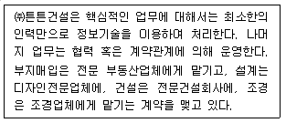
2. 조직의 분화는 크게 수평적 분화와 수직적 분화로 나눌 수 있다. 다음 보기 중 그 성격이 다른 하나는?
3. 의사결정을 개인차원 의사결정, 집단차원 의사결정, 조직 차원 의사결정으로 나눌 때 집단차원 의사결정과 관련 있는 것은?
4. 아래 박스의 이 사람이 지칭하는 인물은 누구인가?
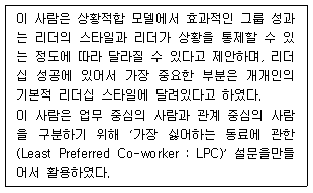
5. 매년 10,000원의 현금 유입을 영구적으로 가져오는 투자 안이 존재하고, 인플레이션 비율이 5%, 회사의 명목기대 수익률이 18%라고 한다면 회사가 최적의 수익을 거두기 위해 투자하는 금액은 최대 얼마인가? (세금은 없다고 가정함)
6. 타인의 기대나 관심으로 인하여 능률이 오르거나 결과가 좋아지는 현상으로, 예를 들어 상사가 특정 부하직원에게 성과향상에 대하여 기대하고 격려하게 되면, 그 부하직원은 높은 성과를 올리는 경향이 있다. 이를 무슨 효과라고 하는가?
7. 전략경영의 일반적인 프로세스로 올바르게 나열된 것은?
8. 운전자본관리의 목표로 옳지 않은 것은?
9. 조직차원의 커뮤니케이션을 공식적 커뮤니케이션, 비공식적 커뮤니케이션으로 나눌 때, 비공식적 커뮤니케이션과 가장 관련이 깊은 것은?
10. 관리의 첫 번째 기능인 계획에 대한 설명으로 옳지 않은 것은?
11. 아래 박스 안의 내용과 가장 관련 있는 이론은?
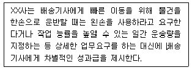
12. 기업은 재무제표가 기업회계기준에 따라 적정하게 작성 되었는지 감사를 받는다. 이 경우 감사보고서에 표기되는 감사의견과 가장 거리가 먼 것은?
13. 다음 주어진 자료를 이용하여 총유동자산을 올바르게 계산한 것은?
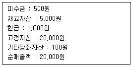
14. 소매업체의 성과척도 중 점포 운영척도와 관련된 설명으로 가장 옳지 않은 것은?
15. 아래 박스의 ( )안에 공통적으로 들어갈 내용으로 알맞은 것은?
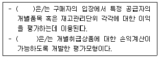
16. 리더십 격자(The Leadership Grid) 이론에 따른 리더의 유형에 대한 설명으로 옳은 것은?
17. 기업의 단기자금 조달 방법 중 담보나 보증이 필요한 경우는?
18. 종업원에게 제공되는 다양한 보상 중 성격이 다른 하나는?
19. 종업원 스스로가 어떤 시간에 근무할지 선택할 자유를 주는 근무시간 자유선택제도에 대한 설명으로 가장 옳지 않은 것은?
20. 한번 학습된 것은 다른 쪽으로도 전이되어 그곳의 학습을 돕는다는 것을 학습의 전이라고 하는데 이러한 유형과 가장 거리가 먼 것은?
2과목: 물류경영
21. SCM(공급체인관리)이 대두하게 된 배경에관한 설명으로 가장 옳지 않은 것은?
22. 컨테이너 및 컨테이너 운송의 일반적인 장단점에 대한 내용으로 옳지 않은 것은?
23. 국제복합운송에 대한 설명으로 옳은 것은?
24. e-procurement에 대한 설명으로 가장 옳지 않은 것은?
25. 어떤 항구가 체선이 심해 장기간의 정박을 필요로 할 경우 그 항구를 목적지로 하는 화물에 대해징수하는 할증료는 무엇인가?
26. e-marketplace는 시장의 주제어자와 가격정책에 따라 판매자 위주전자시장, 중개자 위주전자시장, 구매자 위주 입찰전자시장 그리고 구매자 위주 내부전자시장의 네가지 전자시장으로 구분가능하다. 이에 대한 설명으로 가장 옳지 않은 것은?
27. 아래 내용에서 설명하는 바코드의 마킹 방식은?
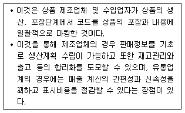
28. 국제화물운송을 담당하고 있는 수송시스템에 대한 내용으로 가장 옳지 않은 것은?
29. 자가창고와 영업창고에 대한 내용으로 옳은 것은?
30. 물류 활동에 대한 설명들이다. 이 중 옳은 것으로만 묶인 것은?
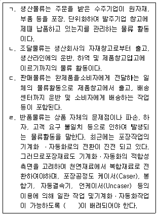
31. 소매유통 발전에 대한 이론 중 하나인 소매수레바퀴가설에 대한 내용으로 옳은 것은?
32. 유통에 관한 설명으로 옳지 않은 것은?
33. ( ) 안에 들어갈 가장 적합한 포장물류의 기능은?
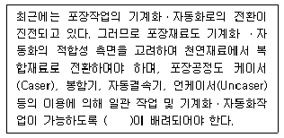
34. 재고의 공간적 배치와 관련된 기능으로, 물류거점별로 소비자의 요구에 부응하는 형태별 분류와배송을 가능하게 해주는 재고관리의 기능은?
35. 예정된 항공편으로 도착하지 않은 화물을 나타내는 항공 화물사고내용 용어로 옳은 것은?
36. 물류의 활동 및 영역에 대한 설명으로 가장 옳지 않은 것은?
37. 기업이 재고를 보유하는 이유 및 재고 발생원인에 대한 설명으로 옳지 않은 것은?
38. 항공운송에 관한 설명으로 가장 옳지 않은 것은?
39. 극동지역에서 벤쿠버 또는 시애틀까지 해상운송하고 캐나다 철도를 이용하여 몬트리올까지 운송한 다음 해상운송을 이용하여 유럽까지 운송하는 복합운송체제로 옳은 것은?
40. 물류센터의 입지계획과 물류센터 배치형태 결정에 관한 설명으로 가장 옳지 않은 것은?
3과목: 상권분석
41. 넬슨의 소매입지원칙에 대한 내용으로 옳지 않은 것은?
42. 다른 도시들의 대형매장면적의 점유율은 25% 수준이고, 현재 A도시 전체 소매업의 매장면적은 2,000,000m2이며 이 중에서 대형매장면적의 비율은 23%라고 가정하자. 점유율 지표 이용법을 활용하여 산출한 A도시에 추가 진입이 가능한 대형점의 매장면적은 얼마인가?
43. 입지요인과 상권요인에 따라 소매점의 매출이 달라지게 된다. 다음 중 상권요인으로 가장 옳지 않은 것은?
44. 크리스탈러(Christaller)의 중심지이론에서 그 이론을 전개하기 위해 제시한 전제 조건으로 가장 옳지 않은 것은?
45. 상권분석 시 관심을 가져야 할 공간적 불안정성(spatial non-stability)에 관한 설명으로 옳지 않은 것은?
46. 상권개발전략을 수립할 때 고려해야 할 환경요인에 대한 설명으로 옳은 것은?
47. 아래 내용에 해당하는 특성을 지닌 상업입지로 옳은것은?
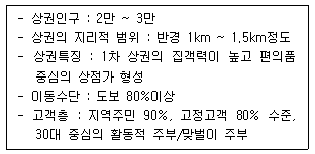
48. 상권분석은 지역분석과 부지분석으로 나누어진다. 지역 분석의 분석항목만으로 짝지어진 것은?
49. 최근 상권분석에 적극적으로 활용되고 있는 지리정보시스템(GIS)에 대한 설명으로 옳지 않은 것은?
50. 입지배정모형(location-allocation model)에 대한 설명으로 옳지 않은 것은?
51. 쇼핑센터의 공간구성요소로 그 연결이 올바른 것은?
52. 상권경계를 분석하는 방법 중에서 각 점포가 차별성이 없는 상품을 판매할 경우 소비자들은 가장 가까운 소매 시설을 이용한다는 가정을 기본 전제로 하는 분석방법에 해당하는 것은?
53. 근린상권내 수퍼마켓 점포의 상권을 분석하기 위하여 Huff 모델을 이용하는 과정에 대한 설명으로 옳지 않은 것은? (단, 해당 점포는 도시지역에 위치하고 면적은 300m2 이내이다.)
54. MNL(Multinomial Logit) 모델을 활용한 상권조사에 대한 내용으로 옳지 않은 것은?
55. 상권분석을 위해 활용되는 회귀분석에 대한 내용으로 가장 옳지 않은 것은?
56. 도매업의 입지 결정은 생산구조와 소비구조의 특징에 따라 달라진다. 생산구조가 다수의 소량분산생산이고 소비 구조 역시 다수에 의한 소량분산소비구조일 때의 입지 특성을 설명한 것으로 옳은 것은?
57. 기본상권이란 해당점포의 고객 또는 매출이 50%이상 존재하는 범위를 말한다. 다음 중 기본상권을 분석하는 일련의 프로세스로 가장 올바르게 짝지어진 것은?
58. 소비자의 변화 역시 소매상권의 범위에 영향을 미친다. 소비자의 소비행동 변화와 관련된 내용으로 옳지 않은 것은?
59. 고객 유도 시설은 고객을 모으는 자석과 같은 역할을 한다고하여 소매 자석(customer genarator : CG)이라고도 한다. 도시형, 교외형, 인스토아형 등 입지유형에 따라 고객유도시설이 달라지는데, 다음 중 교외형 고객 유도 시설이라 볼 수 없는 것은?
60. 소매업의 공간적 분포를 설명하는 중심성지수에 대한 설명으로 옳지 않은 것은?
4과목: 유통마케팅
61. 아래 내용은 무엇에 대한 설명인가?
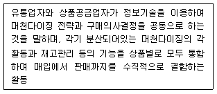
62. 아래 내용은 어떤 매입 방식에 대한 설명인가?
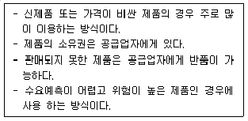
63. 유통업체상표(PB) 전략에 대한 설명으로 가장 옳지 않은 것은?
64. 고관여제품의 소비자 구매특징 및 유통전략으로 가장 옳지 않은 것은?
65. 전략을 수립할 때 기업 차원, 사업 차원, 마케팅 차원으로 수립하기도 한다. 아래의 활동중에서 마케팅전략 차원에서 수행하는 것에 해당하지 않는 것은?
66. 무점포소매상의 판매 상품특성에 대한 설명으로 가장 옳지 않은 것은?
67. (A), (B), (C), (D)에 들어갈 대표적인 유통업태의 유형으로 가장 올바르게 짝지어진 것은?
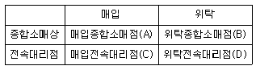
68. 인터넷 광고효과 측정 용어를 설명한 것으로 옳지 않은 것은?
69. 단속형 거래와 관계형 거래를 비교한 내용으로 옳지 않은 것은?
70. 마이클 포터(Michael Porter)가 말한 산업과 경쟁을 결정짓는 5가지 요소(five-force model)에 해당하지 않는 것은?
71. 판매촉진의 한 수단인 프리미엄(premium)의 특징에 대한 설명으로 옳지 않은 것은?
72. 아래 박스의 ( ) 안에 들어갈 가장 적합한 용어는?
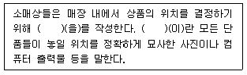
73. 아래 내용은 서비스의 특성 때문에 발생하는 문제를 해결하기 위한 마케팅적 대응전략을 설명한 것이다. 서비스의 여러 특성중에서 어느 것과 관련된 전략이라고 볼 수 있는가?
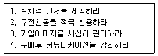
74. 서비스 품질을 관리하기 위해서는 고객의 ‘서비스 기대 수준’을 관리하는 것이 필요하다. 서비스 기대관리와 관련된 용어에 대한 설명으로 옳지 않은 것은?
75. 기업이 자사제품의 경로를 설계할 때 마케팅 관리자가 고려해야 할 유통목표에 해당하지 않은 것은?
76. 비주얼 머천다이징의 PP(point of sale presentation)에 대한 설명으로 옳은 것은?
77. 촉진의 기본적 4가지 수단들의 상대적특징을 비교한 아래 박스의 ( A ), ( B ), ( C ), ( D )에 들어갈 내용이 가장 올바르게 나열된 것은?
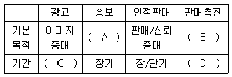
78. 소매업의 포지셔닝 전략에 대한 설명으로 가장 옳지 않은 것은?
79. 서비스 품질을 관리하기 위한 갭분석 모형에 대한 설명으로 옳은 것은?
80. 어느 소매점에서 6,000원에 매입한 물건을 8,000원에 판매하였다면 매가이익률(margin)은 몇 %인가?
5과목: 유통정보
81. 아래에서 설명하는 용어로 가장 적절한 것은?
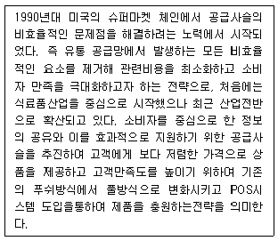
82. 아래에서 설명하는 최신 기술로 가장 적절한 것은?
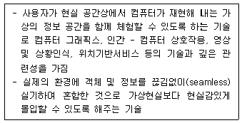
83. 빅데이터의 수집은 조직 내부와 외부에 분산되어 있는 여러 데이터 소스로부터 필요한 데이터를 검색하고 수동 또는 자동으로 수집한다. 다음 중 빅데이터 자동수집 방법과 설명으로 가장 옳지 않은 것은?
84. 일반적인 보안에 대한 위협요소로 가장 옳지 않은 것은?
85. VMI에 대한 설명으로 가장 옳은 것은?
86. SCM을 운영적 측면에서 추진활동을 구분해 볼 때 인바운 드로지스틱스에 해당하는 내용으로 가장 옳은 것은?
87. 사이버마켓의 장점으로 가장 옳지 않은 것은?
88. 시장거래 마케팅과 인터넷 마케팅을 비교 설명한 것으로 가장 옳지 않은 것은?
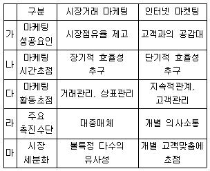
89. 물류정보시스템이 수행하는 주요 기능에 대한 설명으로 가장 옳지 않은 것은?
90. QR코드(Quick Response Code)에 대한 설명으로 가장 옳지 않은 것은?
91. 데이터마이닝의 특징에 대한 설명으로 가장 옳지 않은 것은?
92. 웹 기반 의사결정지원 시스템(DSS)의 특징으로 가장 옳지 않은것은?
93. 정보기술 용어와 그 설명으로 가장 옳지 않은 것은?
94. 창고관리시스템(WMS)에 대한 프로세스 설명으로 옳지 않은 것은?
95. 의사결정과정에서 어떤 안을 합리적으로 선택하기 위해 고려해야 할 사항으로 옳지 않은 것은?
96. 기존의 EDI와 구분하여 웹 EDI의 특징으로 가장 옳지 않은 것은?
97. e-비즈니스가 성공하기 위한 조건으로 가장 옳지 않은 것은?
98. 노나카의 SECI 모델에서 사회화에 대한 설명으로 가장 옳지 않은 것은?
99. 무선인터넷의 속성에 기반을 둔 M-Commerce의 특징으로 가장 옳지 않은 것은?
100. 암호화시스템의 유형에 대한 설명으로 가장 옳지 않은 것은?